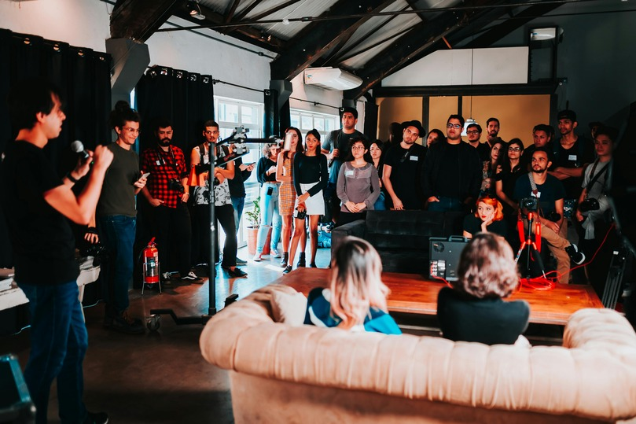

FARE Food Allergy Summit Draws Enthusiastic Community to Orlando
-Jane Gay
3-dec-2024

First-time attendees and returning supporters met at the JW Marriott Grande Lakes in Orlando, Fla., Oct. 13-15, to learn, connect, and build community at FARE Food Allergy Summit 2023. Engaging with the Summit’s Stronger Together theme, close to 600 participants embraced empowerment and creativity as they explored how to live safely and well. Over 70 speakers shared their expertise in 40 sessions for teens, adults and general audiences on topics ranging from disease biology, drug development, clinical care, and health disparities to anxiety and psychosocial impacts, advocacy and public policy, and thriving while managing food allergies